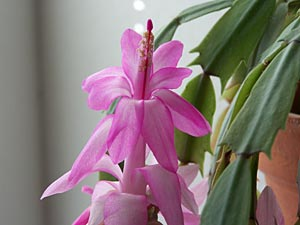
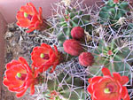

The Cactus

Our featured cactus is the Christmas cactus. The Christmas cactus usually blooms around Christmas time.
Sometimes it blooms around New Years, but it is still called a Christmas cactus even when that unforseen event occurs. New Years Eve Cactus just doesn't sound as nice.
It grows in a pot in your house. Don't put it in the direct sun. And don't put it in a dark closet either.
Cactus Facts
The plural of cactus is cactii. That's almost as fun to say as platipii.
Cactii are similar to succulents in that they store reserves of water within them - the difference, however, is that succulents generally store water in their leaves while cactii store it in the stem, often having no leaves at all.
Cactus Varieties
